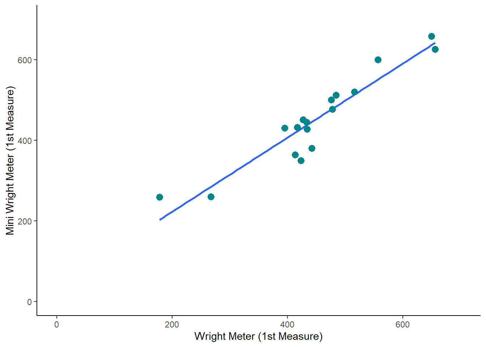

library(tidyverse)
bland <- tibble(
subject = c(1:17),
Wright1 = c(484,395,516,434,476,557,413,442,650,433,417,656,267,478,178,423,427),
Wright2 = c(490,397,512,401,470,611,415,431,638,429,420,633,275,492,165,372,421),
Mini1 = c(512,430,520,428,500,600,364,380,658,445,432,626,260,477,259,350,451),
Mini2 = c(525,415,508,444,500,625,460,390,642,432,420,605,227,467,268,370,443)
)
bland |>
ggplot(aes(x = Wright1, y = Mini1)) +
stat_smooth(method="lm", se=FALSE) +
geom_point(colour = "turquoise4", size = 3) +
scale_x_continuous(limits = c(0,700)) +
scale_y_continuous(limits = c(0,700)) +
theme_classic() +
labs(x = "Wright Meter (1st Measure)", y = "Mini Wright Meter (1st Measure)")2 Week 1: The Philosophy of Science
Lecture 3: The Replication Crisis
Bland-Altmann Plots are generated with the following code.

And then if we add 100 to each measure, we see a very similar plot:
bland |>
mutate (Wright1 = (Wright1+100)) %>%
ggplot(aes(x = Wright1, y = Mini1)) +
stat_smooth(method="lm", se=FALSE) +
geom_point(colour = "turquoise4", size = 3) +
scale_x_continuous(limits = c(0,800)) +
scale_y_continuous(limits = c(0,700)) +
theme_classic() +
labs(x = "Wright Meter (1st Measure)", y = "Mini Wright Meter (1st Measure)")Lecture 5: Introduction to Research Methods
2.1 Create data and plot
library(tidyverse)
plants <- tibble(none = c(4.8, 4.8, 3.94, 4.4,4.5,4.6),
nutrients1 = c( 10.1, 9.7, 9.8, 9.9, 9.3, 10.1),
nutrients2 = c(14.8, 14.6, 14.8, 14, 13.8, 14.6))
plants |>
pivot_longer(cols = c(none, nutrients1,nutrients2),
names_to = "nutrients",
values_to = "height") |>
ggplot(aes(x = nutrients, y = height)) +
geom_boxplot()
2.2 Run an ANOVA on Plant data
longplants <- plants |>
pivot_longer(cols = c(none, nutrients1,nutrients2),
names_to = "nutrients",
values_to = "height")
plant_model <- aov(height ~ nutrients, data = longplants)
summary(plant_model) Df Sum Sq Mean Sq F value Pr(>F)
nutrients 2 296.10 148.05 1184 <2e-16 ***
Residuals 15 1.88 0.13
---
Signif. codes: 0 '***' 0.001 '**' 0.01 '*' 0.05 '.' 0.1 ' ' 12.3 Read and Run Crude Chicken Correlations
crudechicks <- tibble(year = c("2000", "2001", "2002", "2003",
"2004", "2005", "2006", "2007",
"2008", "2009"),
chicken = c(54.2, 54, 56.8, 57.5, 59.3, 60.5, 60.9,
59.9, 58.7, 56),
crude = c(3311, 3405, 3336, 3521, 3674, 3670, 3685,
3656, 3571, 3307))
cor.test(crudechicks$chicken, crudechicks$crude, method = "spearman")
Spearman's rank correlation rho
data: crudechicks$chicken and crudechicks$crude
S = 20, p-value = 0.001977
alternative hypothesis: true rho is not equal to 0
sample estimates:
rho
0.8787879